청소년상담사-3급(1교시)(구) (2016-03-26 기출문제)
1과목: 발달심리
1. ( )에 알맞은 용어는?
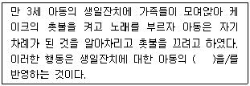
- 스크립트(script)
- 선택적 주의(selective attention)
- 출처 기억(source memory)
- 이중 표상(dual representation)
- 상위 기억(meta memory)
(정답률: 67%)

2. 아동기 정서조절의 발달에 관한 설명으로 옳지 않은 것은?
- 연령이 증가함에 따라 정서 자극에 대한 반응 강도가 증가한다.
- 다양한 정서조절 전략을 융통성 있게 사용하는 능력이 증가한다.
- 행동조절 전략에서 인지조절 전략으로 변화한다.
- 부모에게 의지하기보다는 스스로 조절하는 능력이 증가한다.
- 경험하는 정서와 표현하는 정서를 구별하는 능력이 증가한다.
(정답률: 55%)
3. 다음에 근거하여 영아의 인지 능력을 측정하는 기법은?
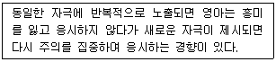
- EEG 기법
- 미시 발생적 기법
- 습관화 기법
- 고진폭 빨기 기법
- 시각절벽 기법
(정답률: 64%)
4. '아동의 학교 성적이 높을수록 자신감이 높다'는 연구 결과에 관한 올바른 해석은?
- 자신감을 높여 주면 학교 성적이 올라간다.
- 아동이 자신감을 갖게 된 원인은 높은 학교 성적이다.
- 학교 성적을 높여 주면 자신감이 올라간다.
- 학교 성적과 자신감에 영향을 미치는 원인이 동일하다.
- 학교 성적과 자신감은 정적 관련성이 있다.
(정답률: 73%)
5. 토마스와 체스(Thomas & Chess)가 제안한 기질의 차원에 해당하지 않는 것은?
- 활동성
- 접근/회피
- 기분 특성
- 반응 강도
- 내향성/외향성
(정답률: 50%)
6. 쉐퍼와 에멀슨(Schaffer&Emerson)의 애착발달 단계에 관한 설명으로 옳지 않은 것은?
- 비사회적-비변별적-특정인-다인수 애착의 순서로 나타난다.
- 특정인 애착 단계에서 영아는 낯선 사람을 두려워하고 경계한다.
- 비변별적 애착 단계에서 영아는 격리에 대한 저항을 나타내지 않는다.
- 비사회적 단계는 출생 후 대략 6주까지이다.
- 다인수 애착 단계에서 영아는 주양육자 외의 다른 사람과도 애착을 형성한다.
(정답률: 57%)
7. 아동의 숙달 지향적 태도를 발달시키는 교사의 전략으로 옳지 않은 것은?
- 성공했을 때, 노력보다 능력을 중심으로 칭찬한다.
- 성공했을 때, 수행의 결과보다 과정을 중심으로 칭찬한다.
- 실패했을 때, 아동이 통제할 수 있는 요인을 찾아 피드백을 한다.
- 한 번의 수행으로 아동의 능력을 판단하지 않는다.
- 다른 사람의 수행보다 아동 자신의 목표와 비교하여 결과에 대한 피드백을 한다.
(정답률: 69%)
8. ( )에 들어갈 말을 순서대로 바르게 나열한 것은?
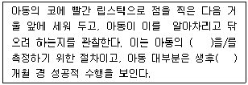
- 얼굴 도식, 6∼12
- 자기 인식, 6∼12
- 얼굴 도식, 12∼18
- 자기 인식, 18∼24
- 얼굴 도식, 18∼24
(정답률: 65%)
9. 횡단 연구 설계에 관한 설명으로 옳은 것을 모두 고른 것은?
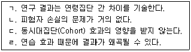
- ㄱ, ㄴ
- ㄱ, ㄷ
- ㄴ, ㄹ
- ㄱ, ㄴ, ㄷ
- ㄴ, ㄷ, ㄹ
(정답률: 59%)
10. 다음 설명에 해당하는 효과는?
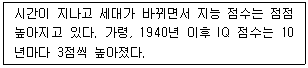
- 환경 증진의 효과
- 플린(Flynn) 효과
- 평균으로의 회귀 효과
- 극단 효과
- 편향 효과
(정답률: 70%)
11. 주의력결핍 및 과잉행동장애(ADHD)의 약물 치료에 관한 설명으로 옳지 않은 것은?
- 주의 및 억제를 다루는 뇌 영역들 간의 정보를 전달하는 신경전달물질과 관련된 치료이다.
- 치료 약물은 기본적으로 중추신경계의 각성 수준을 낮추는 작용을 한다.
- 투약의 효과는 아동에 따라 다르게 나타난다.
- 흔하게 나타나는 부작용은 식욕부진과 불면증이다.
- 심리 치료와 병행하는 것이 도움이 된다.
(정답률: 62%)
12. 청소년기에 처음 나타나는 인지적 특징을 모두 고른 것은?
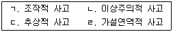
- ㄱ, ㄹ
- ㄴ, ㄷ
- ㄱ, ㄷ, ㄹ
- ㄴ, ㄷ, ㄹ
- ㄱ, ㄴ, ㄷ, ㄹ
(정답률: 55%)
13. 태내 발달에 관한 설명으로 옳은 것은?
- 산모의 충분한 영양섭취는 태아 과체중의 원인이 되어 산모의 건강을 해친다.
- 배아기(embryonic period)는 수정란이 자궁벽에 착상하는 시기이다.
- 산모의 음주는 태아에게 거의 영향을 미치지 않는다.
- 산모의 흡연은 저체중아 출산의 가능성을 높인다.
- 산모에게 안전한 약물은 태아에게도 안전하다.
(정답률: 71%)
14. 에릭슨(E. Erikson)의 심리사회적 발달단계에 관한 설명으로 옳지 않은 것은?
- 친밀성 대 고립감: 타인을 이해하고 사랑의 관계를 형성한다.
- 주도성 대 죄책감: 새로운 것을 시도하고 목표를 설정하며 그에 따라 활동한다.
- 정체감 대 정체감 혼란: '나는 누구이며 미래의 나는 어떻게 될 것인가?'에 대해 고민한다.
- 생산성 대 침체감: 다음 세대에게 기술을 전수하고 지역사회에 도움이 되는 일을 한다.
- 근면성 대 열등감: 타인에 대한 믿음을 증가시키고 자신의 행동을 선택하고 통제한다.
(정답률: 58%)
15. 청소년기의 신체발달 특징에 관한 설명으로 옳은 것을 모두 고른 것은?
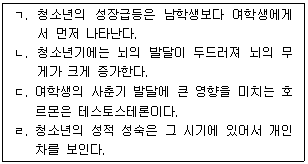
- ㄱ, ㄹ
- ㄴ, ㄷ
- ㄷ, ㄹ
- ㄱ, ㄴ, ㄹ
- ㄱ, ㄷ, ㄹ
(정답률: 72%)
16. 청소년기 자아정체감에 관한 설명으로 옳은 것은?
- 자아정체감에 대한 고민은 구체적 조작기의 인지적 특징과 관련이 깊다.
- 부모의 가치를 그대로 수용하여 비슷한 선택을 하는 경우를 정체감 성취라 한다.
- 자아정체감은 청소년기에 대부분 완벽하게 확립된다.
- 청소년의 연령과 가족은 정체감 발달에 영향을 미치지 않는다.
- 정체감 위기의 상태에 있으면서 아직 의사결정을 못한 상태를 정체감 유예라 한다.
(정답률: 73%)
17. 행동주의 이론에 관한 설명으로 옳지 않은 것은?
- 아동발달에서 생물학적 요인보다 환경적 요인을 더 강조한다.
- 고전적 조건형성이론에서는 관찰학습의 과정을 강조한다.
- 행동주의 이론에서는 자극과 반응 간의 관계를 강조한다.
- 초기 행동주의 연구에서는 직접 관찰하고 측정할 수 있는 행동을 중요하게 여긴다.
- 조작적 조건형성이론에서는 강화와 처벌의 역할을 강조한다.
(정답률: 61%)
18. 프로이트(S. Freud)의 성격 구조에 관한 설명으로 옳은 것은?
- 초자아는 성적욕구와 관련된 것으로 쾌락의 원리를 따른다.
- 자아는 자아이상과 양심으로 구성되어 있다.
- 자아는 현실원리를 따르며 개인이 현실에 적응하도록 돕는다.
- 원초아는 옳고 그름에 대한 판단을 한다.
- 자아는 일차적 사고과정을 따른다.
(정답률: 76%)
19. 클라인펠터 증후군(Klinefelter syndrome)에 관한 설명으로 옳은 것은?
- 여성호르몬의 부족으로 2차 성징이 나타나지 않으며 생식능력이 없다.
- 얼굴이 길고 당나귀 귀 모양의 신체적 특징을 보인다.
- 21번째 염색체가 세 개의 염색체로 구성되어 있다.
- 사춘기 남아에게 가슴과 엉덩이가 커지는 등의 여성적인 2차 성징이 나타난다.
- 신진대사에 필요한 효소의 결핍으로 인한 유전병이다.
(정답률: 69%)
20. 갑자기 큰 소리가 나거나 갑작스런 머리 위치의 변화에 대해 신생아가 팔과 다리를 쭉 벌리면서 무엇인가를 껴안으려고 하는 것 같은 자세를 취하는 반사는?
- 모로반사
- 바빈스키반사
- 파악반사
- 빨기반사
- 걷기반사
(정답률: 74%)
21. 아동ㆍ청소년기의 정신장애에 관한 설명으로 옳지 않은 것은?
- 아동기에는 남아가 여아보다 주의력결핍 및 과잉행동장애(ADHD)의 유병률이 높다.
- 아동기에 발병하는 품행장애의 문제는 일생을 통해 영향을 미칠 가능성이 높다.
- 청소년기의 우울증은 여학생보다 남학생에게서 더 높게 나타난다.
- 청소년기의 신경성폭식증(bulimia nervosa)은 남학생보다 여학생에게서 더 흔히 나타난다.
- 조현병(schizophrenia)은 아동기보다 청소년기나 성인초기에 발병하는 경우가 더 많다.
(정답률: 68%)
22. 퀴블러 로스(E. Kübler-Ross)의 죽음에 관한 5단계를 순서대로 바르게 나열한 것은?
- 부정-분노-우울-타협-수용
- 부정-분노-타협-우울-수용
- 분노-부정-우울-수용-타협
- 분노-부정-타협-우울-수용
- 부정-분노-우울-수용-타협
(정답률: 61%)
23. 성인기 인지발달에 관한 설명으로 옳지 않은 것은?
- 지혜는 연령이 증가할수록 발달하는 경향이 있다.
- 리겔(K. Riegel)의 변증법적 사고에서는 모순과 한계를 인식하는 불평형 상태에서 인지발달이 이루어진다고 본다.
- 후형식적 사고에서는 상황에 따라 진리가 달라질 수 있다고 가정한다.
- 유동적 지능은 결정화된 지능에 비해 상대적으로 더 빨리 낮아진다.
- 변증법적 사고는 현실적 문제해결 사고에서 가설 연역적 사고로 변화하는 것이다.
(정답률: 30%)
24. 발달의 주요 쟁점에 관한 설명으로 옳지 않은 것은?
- 안정성과 불안정성의 쟁점은 집단 내 개인의 상대적 위치 변동과 관련된다.
- 연속성과 불연속성의 쟁점은 양적ㆍ질적 변화의 문제와 관련된다.
- 초기경험을 강조하는 학자에 비해 후기경험을 강조하는 학자들은 발달의 변화가능성을 더 크게 평가한다.
- 인간발달의 특성을 설명하는데 '결정기(critical period)'가 '민감기(sensitive period)'보다 설득력이 더 크다.
- 오늘날 유전과 환경 중 어느 한쪽만을 주장하는 입장은 설득력이 떨어진다.
(정답률: 62%)
25. 레빈슨(D. Levinson)의 성인발달이론에 관한 설명으로 옳지 않은 것은?
- 인생주기는 기본적이고 보편적인 양상에 따라 진행되는 출생에서부터 죽음까지의 과정을 의미한다.
- 인생주기를 네 개의 계절(혹은 시대)로 구분한다.
- 성인 초기의 주요 과업은 꿈의 형성과 멘토 관계의 형성이다.
- 인생(혹은 생애) 구조에는 직업, 가족, 결혼, 종교와 같은 요소들이 포함된다.
- 안정기는 삶을 침체시키거나 새롭게 만드는 시기이다.
(정답률: 45%)
26. 동물행동학에 관한 설명으로 옳지 않은 것은?
- 로렌츠(K. Lorenz)가 대표적인 학자 중 하나이다.
- 동물을 대상으로 주로 자연관찰 방법을 이용한다.
- 각인은 동물행동학자들이 발견한 현상 중의 하나이다.
- 동물행동학자들은 발달의 민감기와 결정기를 인정하지 않는다.
- 특정한 외적 자극에 의해 유발되는 본능적 행동에 관심이 있다.
(정답률: 73%)
27. 발달의 일반적 특징에 관한 설명으로 옳지 않은 것은?
- 발달은 이전 경험의 누적에 따른 산물이다.
- 삶의 중요한 사건이나 경험이 발달상의 큰 변화를 가져올 수 있다.
- 한 개인의 발달은 역사ㆍ문화적 맥락의 영향을 받는다.
- 발달의 각 영역은 상호의존적이기보다는 서로 배타적이다.
- 대부분의 발달적 변화는 성숙과 학습의 산물이다.
(정답률: 75%)
28. 성인기 정신장애에 관한 설명으로 옳은 것을 모두 고른 것은?
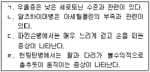
- ㄱ, ㄴ
- ㄱ, ㄴ, ㄷ
- ㄱ, ㄷ, ㄹ
- ㄴ, ㄷ, ㄹ
- ㄱ, ㄴ, ㄷ, ㄹ
(정답률: 60%)
29. 성인기 성격특성에 관한 설명으로 옳은 것을 모두 고른 것은?
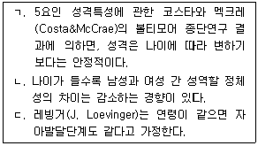
- ㄱ
- ㄷ
- ㄱ, ㄴ
- ㄴ, ㄷ
- ㄱ, ㄴ, ㄷ
(정답률: 52%)
30. 다음은 하인즈(Heinz) 딜레마에 관한 반응의 예이다. 콜버그(L. Kohlberg)의 도덕발달단계 중 어디에 해당하는가?
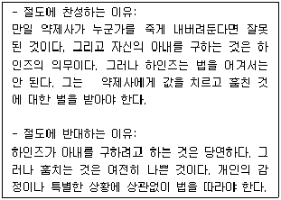
- 처벌-복종 지향
- “착한 소년”, “착한 소녀” 지향
- 사회질서 유지 지향
- 사회계약 지향
- 보편적 윤리원칙 지향
(정답률: 52%)
2과목: 집단상담의 기초
31. 집단상담의 강점으로 옳은 것을 모두 고른 것은?
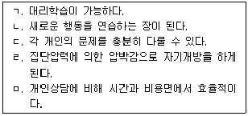
- ㄱ, ㄴ
- ㄱ, ㄴ, ㅁ
- ㄴ, ㄷ, ㄹ
- ㄴ, ㄷ, ㄹ, ㅁ
- ㄱ, ㄴ, ㄷ, ㄹ, ㅁ
(정답률: 71%)
32. 집단원의 문제행동과 예가 바르게 연결된 것은?
- 독점하기 - “울지마. 울면 안돼.”
- 상처 싸매기 - “엄마가 잔소리를 많이 하시는구나.”
- 습관적 불평 - “술을 끊고 싶은데, 나를 도와주세요.”
- 우월한 태도 - “너는 상담을 공부하면서 그런 것을 가지고 힘들어 하니? 나는 너보다 훨씬 힘든 상황이지만 잘 하고 있잖아.”
- 적대적 공격 - “잠깐만요, 지금 무척 화가 난 것 같은데, 무엇에 대해 화가 났는지 구체적으로 말해 주실래요?”
(정답률: 70%)
33. 집단상담을 준비하는 개별면담과정에서 집단상담자의 임무에 해당되는 것을 모두 고른 것은?
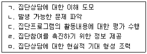
- ㄱ, ㄴ, ㅁ
- ㄱ, ㄴ, ㄷ, ㅁ
- ㄱ, ㄴ, ㄹ, ㅁ
- ㄴ, ㄷ, ㄹ, ㅁ
- ㄱ, ㄴ, ㄷ, ㄹ, ㅁ
(정답률: 49%)
34. 집단과정에서 나타나는 집단상담자의 행동으로 옳은 것은?
- 자신의 감정을 자각하고 치료적으로 표현한다.
- 집단원의 모든 진술이나 행동에 언어적으로 반응한다.
- 집단의 효과에 대해 비판하는 내담자를 직면시킨다.
- 자신의 개인적인 경험을 매번 노출한다.
- 유머는 심리적 작업을 방해하기 때문에 사용할 수 없다.
(정답률: 46%)
35. 다음은 집단원이 선정한 치료요인 중 무엇에 관한 설명인가?
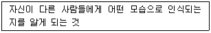
- 대인관계 입력
- 실존적 요인
- 정보공유
- 정화
- 대인관계 출력
(정답률: 60%)
36. 집단상담자가 지켜야 할 윤리에 관한 설명으로 옳지 않은 것을 모두 고른 것은?
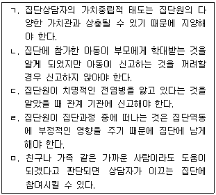
- ㄱ, ㄷ
- ㄴ, ㅁ
- ㄴ, ㄹ, ㅁ
- ㄱ, ㄴ, ㄹ, ㅁ
- ㄱ, ㄴ, ㄷ, ㄹ, ㅁ
(정답률: 49%)
37. 직면(confrontation)이 필요한 상황으로 옳은 것을 모두 고른 것은?
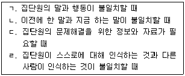
- ㄱ, ㄴ
- ㄱ, ㄷ
- ㄱ, ㄹ
- ㄱ, ㄴ, ㄹ
- ㄱ, ㄴ, ㄷ, ㄹ
(정답률: 50%)
38. 차단하기(blocking) 기법 사용에 관한 설명으로 옳지 않은 것은?
- 부드러운 어조와 태도로 차단할 수 있다.
- 시선이나 반응회피와 같은 비언어적인 방법은 사용하지 않는다.
- 다른 집단원의 피드백과 병행해서 사용할 수 있다.
- 질문을 사용하여 차단할 경우 집단원에게 변명할 기회가 되지 않도록 유의해야 한다.
- 집단원의 행동이 집단에 부정적인 영향을 미칠 수 있다고 판단되는 시점에 즉각 개입하는 것이 필요하다.
(정답률: 48%)
39. 집단과정을 촉진하기 위한 집단상담자의 행동으로 옳은 것을 모두 고른 것은?
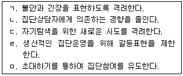
- ㄱ, ㄷ
- ㄴ, ㄷ, ㅁ
- ㄴ, ㄹ, ㅁ
- ㄱ, ㄴ, ㄷ, ㅁ
- ㄱ, ㄴ, ㄷ, ㄹ, ㅁ
(정답률: 69%)
40. 집단상담자가 사용하는 기법과 예가 바르게 연결된 것은?
- 폐쇄적 질문 - “지금 기분이 슬픈가요?”
- 구조화 - “네가 먼저 다가가서 말을 걸어보렴.”
- 반영 - “잠깐, 마무리할 시간이 다 되어서 그 이야기는 다음 시간에 하도록 할까요?”
- 재진술 - “용기 있게 자신의 이야기를 하면서 적극적으로 참여하는 모습이 보기 좋아요.”
- 직면 - “어머니가 초등학교 때 공부하라고 때린 것 때문에, 공부하기를 싫어하게 된 것 같구나.”
(정답률: 61%)
41. 집단상담자가 집단 역동을 파악하기 위해 관찰해야 할 요소로 옳은 것을 모두 고른 것은?
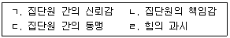
- ㄱ, ㄷ
- ㄴ, ㄹ
- ㄱ, ㄷ, ㄹ
- ㄴ, ㄷ, ㄹ
- ㄱ, ㄴ, ㄷ, ㄹ
(정답률: 62%)
42. 집단상담에서 응집력이 높을 때 나타나는 특성으로 옳은 것을 모두 고른 것은?
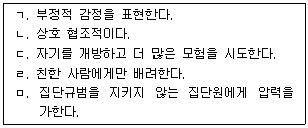
- ㄱ, ㄴ, ㄷ
- ㄴ, ㄷ, ㅁ
- ㄱ, ㄴ, ㄷ, ㄹ
- ㄱ, ㄴ, ㄷ, ㅁ
- ㄱ, ㄴ, ㄷ, ㄹ, ㅁ
(정답률: 50%)
43. 다음과 같은 특성이 모두 나타날 경우에 집단상담자가 대처할 방법으로 옳지 않은 것은?
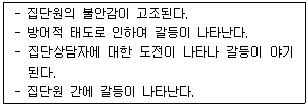
- 표출된 불안감을 다룬다.
- 부적절한 공격을 차단한다.
- 불만은 수용하고 충분히 표현하게 한다.
- 집단원 간의 갈등은 서로 말하도록 한다.
- 집단원 간의 갈등은 상담자가 개입하지 않는다.
(정답률: 61%)
44. 다음과 같은 특징이 모두 나타나는 집단의 발달단계는?
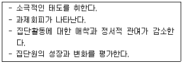
- 면접단계
- 시작단계
- 갈등단계
- 생산단계
- 종결단계
(정답률: 58%)
45. 집단상담 과정 중 생산적인 집단에서 나타나는 변화 촉진요인으로 옳지 않은 것은?
- 비슷한 문제를 가진 집단원을 보면서 안도감을 느낀다.
- 다른 집단원의 긍정적, 부정적 행동을 모방한다.
- 자신의 책임을 수용한다.
- 회피했던 감정을 표현한다.
- 건강한 생활에 대한 정보를 얻는다.
(정답률: 52%)
46. 코리(G. Corey)의 집단발달단계 중 작업단계의 집단상담자 역할로 옳지 않은 것은?
- 적절한 행동모델이 된다.
- 집단원의 사고와 정서변화를 촉진한다.
- 집단원의 공통된 주제를 찾고 보편성을 제공한다.
- 집단원이 상담 목표를 설정하도록 돕는다.
- 집단원이 깊은 수준의 자기탐색을 할 수 있도록 돕는다.
(정답률: 53%)
47. 아들러(A. Adler) 집단상담의 재정향(reorientation) 단계에 관한 설명으로 옳지 않은 것은?
- 새로운 결정이 이루어지고 목표가 수정된다.
- 효과적인 대안을 선택해서 실행한다.
- 행동하는 방식의 이면에 숨겨진 동기를 다룬다.
- 집단원이 과거의 잘못된 행동과 태도를 버린다.
- '마치 ∼ 인 것처럼'과 같은 행동지향적 기법을 자주 사용한다.
(정답률: 48%)
48. 집단상담의 이론적 접근과 구성요소가 바르게 연결되지 않은 것은?
- 심리극 - 주인공, 보조자아
- 현실치료 - 선택, 접촉
- 교류분석 - 각본, 스트로크
- 정신분석 - 전이, 해석
- 행동주의 - 소거, 모델링
(정답률: 46%)
49. 다음 설명으로 옳지 않은 것은?
- 인간중심상담에서는 수용과 이해를 중시한다.
- 인지행동치료는 변증법 행동치료를 포함한다.
- 현실치료는 비활동적이고 비지시적이다.
- 행동주의상담에서 행동시연은 사회성을 기르는 데 유용하다.
- 교류분석은 개인을 고유한 존재로 보고 자율성을 성취하도록 돕는다.
(정답률: 44%)
50. 인간중심상담에서 집단상담자의 일치성에 관한 설명으로 옳지 않은 것은?
- '지금-여기'의 경험과 관련하여 현재에 집중한다.
- 높은 수준의 자각을 유지한다.
- 자기수용과 자기신뢰를 가진다.
- 집단원과의 인간적 만남을 위해 노력한다.
- 집단원에 대한 감정을 여과 없이 표현한다.
(정답률: 55%)
51. 청소년 집단상담자에게 요구되는 능력과 자질에 관한 설명으로 옳은 것을 모두 고른 것은?
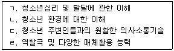
- ㄱ, ㄴ
- ㄷ, ㄹ
- ㄱ, ㄴ, ㄷ
- ㄱ, ㄴ, ㄹ
- ㄱ, ㄴ, ㄷ, ㄹ
(정답률: 62%)
52. 청소년 집단원의 일반적 특징에 관한 설명으로 옳지 않은 것은?
- 부모나 교사에 의해 의뢰된 경우 상담에 대한 의심과 적대감을 표출하는 경향이 있다.
- 구체적 조작기에 해당되므로 경험에서 벗어난 논리적 추론 능력이 충분하다.
- 상담동기가 낮은 경우 장시간 진행되는 자기탐색 활동에 집중해서 참여하는 것이 어렵다.
- 동시다발적으로 다양한 관심을 갖고, 관심의 변화속도가 빠른 경향이 있다.
- 기성세대에 대한 편견과 왜곡된 기대로 인해 성인 상담자를 부정적으로 지각하는 경향이 있다.
(정답률: 67%)
53. 자기성장 집단상담에 적합하지 않은 청소년 내담자를 모두 고른 것은?
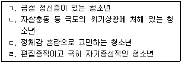
- ㄱ, ㄴ
- ㄱ, ㄹ
- ㄱ, ㄴ, ㄹ
- ㄴ, ㄷ, ㄹ
- ㄱ, ㄴ, ㄷ, ㄹ
(정답률: 58%)
54. 청소년 집단원의 부적절한 행동과 이에 대한 상담자의 개입방법이 바르게 연결되지 않은 것은?
- 적대적 태도 - 집단원 간의 피드백을 통해 적대적인 집단원으로 하여금 자기비판의 시간을 갖도록 유도한다.
- 독점하기 - 독점하는 행동에 대해 판단을 배제하고 관찰한 사실만을 알려준다.
- 사실적 이야기를 늘어놓기 - 집단 안의 역동에 참여하여 '지금-여기'에서 느껴지는 감정에 초점을 맞추도록 돕는다.
- 질문공세하기 - 질문 속에 포함된 핵심 내용을 자신을 주어로 해서 직접 표현해 보도록 권유한다.
- 충고하기 - 충고를 하게 된 동기에 대해 스스로 탐색하게 하고 그가 경험하고 있는 느낌을 반영해 준다.
(정답률: 38%)
55. 다음 청소년 집단상담 장면에서 상담자가 적용한 집단기술은?
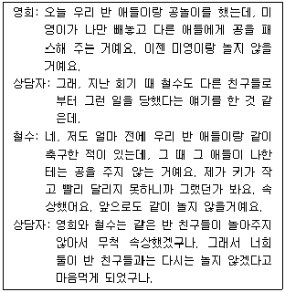
- 연결하기(linking)
- 모델링(modeling)
- 구조화(structuring)
- 차단하기(blocking)
- 질문하기(questioning)
(정답률: 66%)
56. 집단상담기술과 그에 관한 설명이 바르게 연결된 것은?
- 자기 개방 - 집단역동에 방해가 되는 집단원의 의사소통에 직접 개입하여 역기능적 행동을 중지시키는 것
- 보편화 - 집단원이 상호작용하게 되면서 유사한 감정과 관심을 갖고 있다는 사실을 깨닫도록 해 주는 것
- 구조화 - 집단원이 지금 현재 논의되고 있는 주제와 활동에 대해 지속적으로 집중하면서 이야기하도록 독려하는 것
- 요약하기 - 집단원이 순간순간 경험하고 있는 것에 접근하여 지각하고 느껴지는 것을 표현하도록 하는 것
- 초점 맞추기 - 집단참여에 필요한 제반 규정과 한계에 대해 집단원에게 설명하는 것
(정답률: 60%)
57. 공동상담자가 집단을 운영할 때 나타나는 특징이 아닌 것은?
- 집단원에게 보다 다양한 역할 모델링의 기회가 제공된다.
- 집단원의 전이가 촉진될 수 있다.
- 상담자의 소진 발생 가능성이 감소된다.
- 상담자 서로 간의 집단운영 방식과 전략을 관찰함으로써 전문성이 신장된다.
- 집단원에게 다양한 경험의 기회를 제공하기 위해 두 상담자가 상충되는 접근과 전략을 적용하는 것이 효과적이다.
(정답률: 55%)
58. 상담자가 청소년집단을 운영할 때 고려해야 할 사항으로 옳지 않은 것은?
- 집단원에게 도움이 된다고 생각될 경우 훈련받지 않은 기법을 적용한다.
- 집단내 갈등이 발생하면 다루던 주제를 잠시 미루고 갈등을 먼저 다룰 수 있다.
- 상담을 시작할 때 집단에 참여함으로써 발생할 수 있는 심리적 위험요소에 대해 인지시킨다.
- 상담을 시작하기 전, 개인적 목표에 도달하기 위해 상담자로부터 어떤 도움을 받을 수 있는지를 알려준다.
- 상담 내용을 녹화할 때 집단원에게 녹화한 자료의 용도를 알리고 사전 동의를 받는다.
(정답률: 64%)
59. 침묵하는 집단원에 대한 개입방법으로 옳지 않은 것은?
- 침묵 이면에 숨겨진 의미를 탐색할 수 있도록 촉진한다.
- 회기에 대한 준비 부족으로 인해 나타나는 침묵인 경우에는 적극 개입하여 집단활동을 유도한다.
- 상담자가 집단원의 침묵 행동을 조장할 수도 있으므로 상담자 자신을 탐색해 본다.
- 다른 집단원이 침묵하는 집단원에 대해 비난하거나 공격적인 태도를 취하지 않도록 개입한다.
- 집단원이 집단 역동을 방해하지 않는 한 침묵을 다루지 않아도 된다.
(정답률: 67%)
60. 청소년 집단상담의 발달단계별 상담자의 주요 활동내용이 바르게 연결된 것은?
- 기획 및 준비 단계 - 집단원 간의 기초적인 유대 관계를 형성하도록 한다.
- 시작 단계 - 집단에서의 경험과 학습내용을 통합하고 강화하도록 돕는다.
- 중간 단계 - 집단원 간의 갈등을 직면하게 하고, 논의하며, 해결해 간다.
- 종결 단계 - 집단경험과 관련하여 평가 대상, 내용 및 방법을 구성한다.
- 추수 단계 - 집단원 간의 피상적인 의사소통을 다루고 저항을 효과적으로 처리한다.
(정답률: 48%)
3과목: 심리측정 및 평가
61. 백분위에 관한 설명으로 옳지 않은 것은?
- 서열척도이다.
- 백분위 50은 중앙치에 해당한다.
- 규준집단 내에서 수검자의 상대적 위치를 알 수 있다.
- 원점수가 같아도 백분위는 속한 규준집단에 따라 다르게 나타날 수 있다.
- 백분위 80은 '백분위 80에 해당하는 점수보다 높은 점수를 받은 사람이 전체 사례의 80%이다'라는 것을 의미한다.
(정답률: 72%)
62. 청소년 스마트폰 중독 연구를 위해 놀이공원에 방문한 청소년을 대상으로 자료를 수집했다. 이에 해당하는 표집방법은?
- 편의표집(convenience sampling)
- 유층표집(stratified sampling)
- 군집표집(cluster sampling)
- 판단표집(judgmental sampling)
- 체계적 표집(systematic sampling)
(정답률: 55%)
63. 심리측정에 관한 설명으로 옳지 않은 것은?
- 측정에는 항상 오차가 있다.
- 측정을 위한 조작적 정의는 모든 연구에서 동일하다.
- 심리적 구성개념은 직접적으로 측정할 수 없다.
- 심리적 구성개념을 측정하는 방법은 여러 가지가 있다.
- 행동을 관찰하여 심리적 구성개념을 추론한다.
(정답률: 63%)
64. 심리평가의 기능으로 옳은 것을 모두 고른 것은?
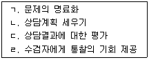
- ㄱ, ㄴ, ㄷ
- ㄱ, ㄴ, ㄹ
- ㄱ, ㄷ, ㄹ
- ㄴ, ㄷ, ㄹ
- ㄱ, ㄴ, ㄷ, ㄹ
(정답률: 58%)
65. 한 검사가 그 준거로 사용된 현재의 어떤 행동이나 특성과 관련된 정도를 나타내는 타당도는?
- 내용타당도(content validity)
- 안면타당도(face validity)
- 공인타당도(concurrent validity)
- 구성타당도(construct validity)
- 예언타당도(predictive validity)
(정답률: 50%)
66. 준거참조 검사에 관한 설명으로 옳은 것을 모두 고른 것은?
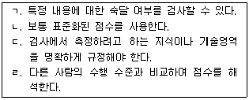
- ㄱ, ㄴ
- ㄱ, ㄷ
- ㄱ, ㄹ
- ㄴ, ㄷ
- ㄴ, ㄹ
(정답률: 39%)
67. 비율척도에 관한 설명으로 옳지 않은 것은?
- 절대영점을 포함하고 있다.
- 일반적으로 비모수통계가 적용된다.
- 측정치 간에 등간성이 있다.
- 순위에 대한 정보를 포함한다.
- 명명척도, 서열척도, 등간척도보다 많은 정보를 포함한다.
(정답률: 60%)
68. 심리학 개론 시험성적이 정규분포를 이루고 평균이 60, 표준편차가 10이라고 할 때 75점에 해당하는 Z점수와 T점수는?
- Z=0, T=50
- Z=+0.5, T=60
- Z=+0.5, T=65
- Z=+1.5, T=60
- Z=+1.5, T=65
(정답률: 58%)
69. 동형검사 신뢰도에 관한 설명으로 옳지 않은 것은?
- 검사내용의 차이에 따른 오차가 생길 수 있다.
- 동형성 계수를 통해 추정할 수 있다.
- 연습효과를 완전히 배제할 수 있다.
- 완벽한 동형검사를 제작하기 어렵다.
- 검사-재검사 신뢰도의 제한점을 보완하는 한 방법이다.
(정답률: 60%)
70. 구성타당도(construct validity)를 확인하는 방법을 모두 고른 것은?
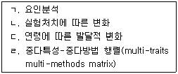
- ㄱ, ㄴ, ㄷ
- ㄱ, ㄴ, ㄹ
- ㄱ, ㄷ, ㄹ
- ㄴ, ㄷ, ㄹ
- ㄱ, ㄴ, ㄷ, ㄹ
(정답률: 40%)
71. 모호한 검사자극을 통해 개인의 의식 영역 밖의 정신현상을 측정하기 위한 성격검사는?
- MMPI-2
- K-WAIS-IV
- CAT
- PAI
- SCL-90-R
(정답률: 52%)
72. 비네-시몽검사(Binet-Simon Scale)를 미국 문화에 맞게 스탠포드-비네검사(Stanford-Binet Intelligence Scale)로 수정한 학자는?
- 터먼(L. Terman)
- 웩슬러(D. Wechsler)
- 캐텔(R. Cattell)
- 오티스(A. Otis)
- 스피어만(C. Spearman)
(정답률: 49%)
73. 검사 윤리에 관한 설명으로 옳은 것을 모두 고른 것은?
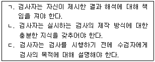
- ㄱ
- ㄱ, ㄴ
- ㄱ, ㄷ
- ㄴ, ㄷ
- ㄱ, ㄴ, ㄷ
(정답률: 64%)
74. K-WISC-IV 검사의 언어이해지수(VCI)에 포함된 소검사는?
- 공통성
- 숫자
- 순차연결
- 기호쓰기
- 동형찾기
(정답률: 66%)
75. 12세 청소년의 정신연령(mental age)이 18세로 측정되었다. 이 청소년의 비율 지능지수(ratio IQ)는?
- 75
- 100
- 125
- 150
- 175
(정답률: 60%)
76. 써스톤(L. Thurstone)의 기초정신능력(Primary Mental Ability)에 포함되지 않는 것은?
- 언어 능력(verbal comprehension ability)
- 수리 능력(number facility ability)
- 공간 능력(spatial visualization ability)
- 신체운동 능력(bodily kinesthetic ability)
- 추리 능력(reasoning ability)
(정답률: 48%)
77. K-WISC-IV에 관한 설명으로 옳지 않은 것은?
- '이해'는 언어이해지수(VCI)의 보충 소검사이다.
- '빠진곳찾기'는 지각추론지수(PRI)의 보충 소검사이다.
- '산수'는 '순차연결'을 대체하는 소검사이다.
- '상식'은 '어휘'를 대체하는 소검사이다.
- 15세 11개월 된 청소년에게 실시할 수 있다.
(정답률: 36%)
78. 투사적 검사와 객관적 검사의 특징에 관한 설명으로 옳지 않은 것은?
- 투사적 검사는 객관적 검사에 비해 채점과 해석이 복잡하다.
- 투사적 검사는 객관적 검사에 비해 검사자에게 상당한 전문성이 요구된다.
- 투사적 검사에 비해 객관적 검사에서 수검자는 자신의 상태를 은폐하거나 과장하기가 용이하다.
- 투사적 검사에 비해 객관적 검사는 검사의 타당도가 충분히 입증되지 않았다.
- 투사적 검사는 객관적 검사에 비해 검사자극이 모호하다.
(정답률: 56%)
79. 심리검사 결과의 전달에 관한 설명으로 옳지 않은 것은?
- 검사결과가 수검자에게 어떻게 받아들여졌는지 확인하는 과정을 갖는 것이 바람직하다.
- 수검자가 초등학교 학생인 경우에는 검사결과에 대한 설명을 생략한다.
- 수검자가 쉽게 이해할 수 있는 용어를 사용하여 설명한다.
- 보호자의 서면 동의하에 교사가 검사를 의뢰한 경우에는 검사결과를 교사나 학교에 전달할 수 있다.
- 검사결과에 대한 수검자의 정서적 반응을 살피고 검사결과를 이해할 수 있도록 돕는다.
(정답률: 69%)
80. 정신상태평가(mental status examination)의 주요 항목이 아닌 것은?
- 기억
- 지각
- 정신운동 기능
- 발달력
- 언어와 사고
(정답률: 57%)
81. 집-나무-사람(HTP) 검사에서 '사람 그림'의 몸통, '집 그림'의 벽면, '나무 그림'의 줄기(trunk)가 공통적으로 의미하는 심리적 특성은?
- 불안 수준
- 자아 강도
- 대인관계 만족
- 인정에 대한 욕구
- 내적 공상과 사고활동
(정답률: 54%)
82. 다음에서 설명하는 능력은 GATB 직업적성검사에서 어떤 적성을 공통적으로 측정하는가?
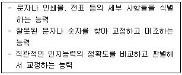
- 운동조절적성
- 형태지각적성
- 사무지각적성
- 공간추리적성
- 언어 및 수리적성
(정답률: 56%)
83. 로샤(Rorschach) 검사의 지표와 그 해석적 의미가 바르게 연결된 것은?
- D-스트레스에 대한 내성과 통제력
- T-막연한 두려움이나 불안
- Y-타인에 대한 의존과 친밀감 욕구
- MOR-자기애적 성향
- Lambda-대인관계 만족
(정답률: 25%)
84. 벤더게슈탈트검사(BGT)에 관한 설명으로 옳지 않은 것은?
- 비언어적 검사로 문화적 영향을 덜 받는다.
- 형태심리학과 역동심리학 이론을 근거로 개인의 심리적 과정을 분석할 수 있다.
- 인지장애가 심한 기질적 뇌손상 환자에게는 실시하지 않는다.
- 여분의 모사 용지를 준비하여 수검자가 요구하면 더 사용할 수 있게 한다.
- 시각, 운동 및 통합 기능을 평가한다.
(정답률: 59%)
85. 성격평가질문지(PAI)에서 척도명과 척도군의 연결이 옳지 않은 것은?
- 저빈도척도(INF)-타당도척도
- 공격성척도(AGG)-임상척도
- 지배성척도(DOM)-대인관계척도
- 자살관념척도(SUI)-치료고려척도
- 비지지척도(NON)-치료고려척도
(정답률: 48%)
86. 주제통각검사(TAT)에 관한 설명으로 옳지 않은 것은?
- 머레이(H. Murray)의 욕구이론에 기초하여 제작된 투사법 검사이다.
- 집단으로 시행하는 것도 가능하다.
- 남자 청소년과 여자 청소년에게 사용하는 도판은 동일하다.
- 하나의 이야기 속에 두 명 이상의 주인공이 나타나기도 한다.
- 그림자극에 대한 이야기를 구성하는 과정에서 성격특성과 무의식적 갈등이 나타난다.
(정답률: 56%)
87. 로샤(Rorschach) 검사에서 반응 영역(location)을 채점하는 지표가 아닌 것은?
- W
- D
- Dd
- DV
- S
(정답률: 37%)
88. 다면적 인성검사(MMPI)에 관한 설명으로 옳은 것을 모두 고른 것은?
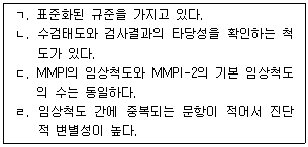
- ㄱ, ㄴ
- ㄴ, ㄹ
- ㄱ, ㄴ, ㄷ
- ㄴ, ㄷ, ㄹ
- ㄱ, ㄴ, ㄷ, ㄹ
(정답률: 42%)
89. 다음 특성을 모두 포함하는 홀랜드(J. Holland)의 직업적 성격유형은?
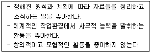
- 탐구적 유형(Investigative type)
- 사회적 유형(Social type)
- 기업적 유형(Enterprising type)
- 관습적 유형(Conventional type)
- 현실적 유형(Realistic type)
(정답률: 72%)
90. 다면적 인성검사(MMPI-2)에서 개인의 전반적인 에너지와 활동수준을 평가하며 특히 정서적 흥분, 짜증스런 기분, 과장된 자기 지각을 반영하는 척도는?
- 척도 1
- 척도 4
- 척도 6
- 척도 7
- 척도 9
(정답률: 50%)
4과목: 상담이론
91. 상담의 이중관계에 관한 설명으로 옳지 않은 것은?
- 상담자가 내담자와의 관계에서 두 가지 이상의 역할을 동시에 수행할 때 성립된다.
- 내담자를 위해하거나 착취할 가능성이 있기 때문에 피해야 한다.
- 상담자의 판단력을 손상시키고 치료관계에 문제를 야기한다.
- 상담자가 내담자의 상담 교육을 위해 수퍼바이저 역할을 하는 것은 해당되지 않는다.
- 내담자와의 성관계는 이중관계에 해당된다.
(정답률: 67%)
92. 다음 사항은 상담 진행과정 중 어느 시기에 필요한 과제인가?
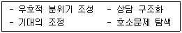
- 초기
- 중기
- 종결
- 마지막 회기
- 추수 상담
(정답률: 72%)
93. 게슈탈트 이론에서 알아차림-접촉 주기의 순서가 바르게 연결된 것은?
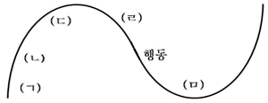
- ㄱ: 감각, ㄴ: 배경, ㄷ: 에너지 동원, ㄹ: 접촉, ㅁ: 알아차림
- ㄱ: 배경, ㄴ: 감각, ㄷ: 알아차림, ㄹ: 에너지 동원, ㅁ: 접촉
- ㄱ: 감각, ㄴ: 접촉, ㄷ: 에너지 동원, ㄹ: 배경, ㅁ: 알아차림
- ㄱ: 배경, ㄴ: 감각, ㄷ: 에너지 동원, ㄹ: 알아차림, ㅁ: 접촉
- ㄱ: 감각, ㄴ: 배경, ㄷ: 접촉, ㄹ: 에너지 동원, ㅁ: 알아차림
(정답률: 56%)
94. 상담에 관한 설명으로 옳지 않은 것은?
- 상담의 주요 구성요소는 상담자, 내담자, 상담관계이다.
- 내담자의 동의 하에 실현 가능한 상담목표를 설정해야 한다.
- 상담은 교육적, 발달적, 예방적, 교정적 기능 등이 있다.
- 상담자는 이론에 대한 이해와 상담 수련을 통해 전문가로서의 자질을 갖춘다.
- 상담자는 위기상담에서도 일반상담과 같이 동일한 방법으로 개입해야 한다.
(정답률: 68%)
95. 게슈탈트 상담에서 미해결 과제에 관한 설명으로 옳지 않은 것은?
- 미해결 과제는 전경과 배경의 교체를 촉진한다.
- 완결되지 않거나 해소되지 않은 게슈탈트를 의미한다.
- 분노, 불안과 같은 감정으로 나타난다.
- 신체 증상을 일으킬 수 있기 때문에 상담자는 내담자의 신체적 경험에 주의를 기울인다.
- 미해결 과제를 해결할 수 있는 방법은 '지금-여기'를 알아차리는 것이다.
(정답률: 63%)
96. 다음에서 설명하는 행동주의 상담기법은?
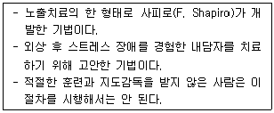
- 사회기술훈련
- 변증법적 치료(DBT)
- 이완훈련
- 마음챙김 기반 스트레스 감소법
- 안구운동 둔감법 및 재처리 과정(EMDR)
(정답률: 49%)
97. 현실치료에 관한 설명으로 옳지 않은 것은?
- 현재의 행동에 초점을 두고 개인적인 책임을 강조한다.
- 내담자가 현재 행동을 평가하고 더 효과적인 행동을 할 수 있는 심리적 힘을 키우도록 돕는다.
- 글래서(W. Glasser)의 5가지 기본 욕구는 소속, 존중, 자유, 즐거움 및 생존의 욕구이다.
- 불만족스러운 관계 혹은 관계 결여에 관심이 있다.
- 맞닥뜨림, 역설적 기법 등을 사용한다.
(정답률: 57%)
98. 통합적 상담에 관한 설명으로 옳은 것을 모두 고른 것은?
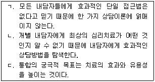
- ㄱ
- ㄴ
- ㄱ, ㄴ
- ㄱ, ㄷ
- ㄱ, ㄴ, ㄷ
(정답률: 69%)
99. 행동주의 상담기법 중 목표하는 결과가 다른 하나는?
- 소거(extinction)
- 처벌(punishment)
- 이완훈련(relaxation training)
- 체계적 둔감법(systematic desensitization)
- 행동조성(shaping)
(정답률: 46%)
100. 접수면접에 관한 설명으로 옳지 않은 것은?
- 내담자가 상담실을 방문하면 일차적으로 이루어지는 활동이다.
- 내담자의 기본정보, 호소문제, 스트레스 등에 대한 정보를 파악해야 한다.
- 수집된 자료는 완전하지 않을 수 있기 때문에 진단은 잠정적으로 이루어져야 한다.
- 내담자에 대한 정보를 최대한 수집해야 하기 때문에 공감과 경청보다는 폐쇄적 질문을 집중적으로 사용해야 한다.
- 심한 정서장애가 있는 내담자를 접수면접 할 때는 '정신상태평가'를 실시한다.
(정답률: 64%)
101. 효과적인 상담을 통해 나타나는 내담자의 언어적 반응으로 옳지 않은 것은?
- “난 이제 화가 날 때 화났다고 말할 수 있어.”
- “내가 왜 그렇게 엄마를 미워했는지 알 것 같아.”
- “상담 선생님이 내 문제를 모두 해결해 줄 거야.”
- “상담을 받고 난 후 불안했던 마음이 좀 편해졌어.”
- “계속 고민해 오던 진로를 선택할 수 있을 것 같아.”
(정답률: 72%)
102. 다음에 제시된 설명과 개념의 연결이 모두 옳은 것은?
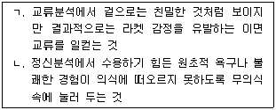
- ㄱ - 게임, ㄴ - 억제
- ㄱ - 게임, ㄴ - 억압
- ㄱ - 각본, ㄴ - 부인
- ㄱ - 스탬프, ㄴ - 부인
- ㄱ - 스트로크, ㄴ - 억압
(정답률: 63%)
103. 다음 사례에서 교류분석상담의 자아 상태와 교류 형태 연결이 모두 옳은 것은?
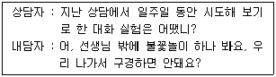
- 상담자 - A, 내담자 - AC, 상보교류
- 상담자 - A, 내담자 - FC, 교차교류
- 상담자 - A, 내담자 - FC, 상보교류
- 상담자 - NP, 내담자 - FC, 상보교류
- 상담자 - NP, 내담자 - AC, 교차교류
(정답률: 65%)
104. 다음 보기가 공통적으로 설명하고 있는 것은?
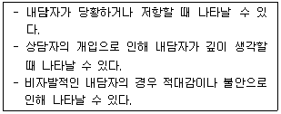
- 침묵
- 유머
- 도전
- 해석
- 통찰
(정답률: 68%)
1⑤. 다음 사례에서 방어기제의 연결이 모두 옳은 것은?
- ㄱ - 부인, ㄴ - 퇴행, ㄷ - 합리화
- ㄱ - 투사, ㄴ - 퇴행, ㄷ - 치환
- ㄱ - 투사, ㄴ - 치환, ㄷ - 부인
- ㄱ - 퇴행, ㄴ - 치환, ㄷ - 억압
- ㄱ - 합리화, ㄴ - 억압, ㄷ - 부인
(정답률: 69%)
106. 정신분석 상담의 관점에 해당하지 않는 것은?
- “불안증상은 완벽주의적인 아버지로 인해 형성된 것 같습니다.”
- “학대받은 과거보다는 현재 어떤 선택을 하느냐가 더 중요하다고 봅니다.”
- “음식 조절을 못하는 것은 아무래도 구강기 욕구충족 문제 때문인 것 같습니다.”
- “이 문제 행동은 의식적 요인보다 무의식적 요인에 의해 더 많은 영향을 받았다고 볼 수 있습니다.”
- “현재 이런 성격을 갖게 된 것은 어린 시절 엄마와의 상호작용 경험이 중요하게 작용한 것입니다.”
(정답률: 65%)
107. 실존주의 상담에서 가정하는 인간의 궁극적 관심사가 아닌 것은?
- 죽음
- 고독
- 무의미
- 자유와 책임
- 무의식의 자각
(정답률: 66%)
108. 각 상담이론과 용어의 연결이 옳은 것은?
- 현실치료 - PAC
- 교류분석 - WDEP
- 인간중심상담 - OVP
- 게슈탈트상담 - ABCDE
- 아들러상담 - BASIC ID
(정답률: 56%)
109. 상담자의 효과적인 개입의 예가 아닌 것은?
- “화가 난 것처럼 보이는구나.”
- “지금 너의 기분이 어떤지 궁금하구나.”
- “네 말은 그러니까 그곳에 가고 싶지 않았다는 거구나.”
- “그래서 거기 갔었어? 그 사람은 만났어? 다음 날 얘기는 했니?”
- “너는 공부를 잘 하고 싶다고 말은 하지만 수업시간에는 주로 게임을 하고 있구나.”
(정답률: 60%)
110. 다음 각 진술과 합리정서행동치료의 비합리적 신념을 바르게 연결한 것은?
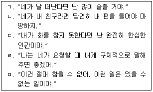
- ㄴ - 타인에 대한 당위적 요구
- ㄹ - 자신에 대한 당위적 요구
- ㄱ, ㄴ - 타인에 대한 당위적 요구
- ㄷ, ㄹ - 자신에 대한 당위적 요구
- ㄷ, ㅁ - 세상에 대한 당위적 요구
(정답률: 59%)
111. 벡(A. Beck)이 제시한 인지적 오류의 내용과 명칭이 바르게 연결된 것은?
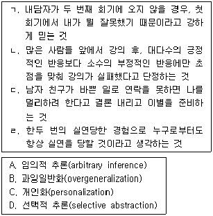
- ㄱ - A, ㄴ - C, ㄷ - D, ㄹ - B
- ㄱ - A, ㄴ - D, ㄷ - B, ㄹ - C
- ㄱ - C, ㄴ - B, ㄷ - A, ㄹ - D
- ㄱ - C, ㄴ - D, ㄷ - A, ㄹ - B
- ㄱ - D, ㄴ - B, ㄷ - C, ㄹ - A
(정답률: 59%)
112. 아들러(A. Adler)의 개인심리학에 관한 설명으로 옳지 않은 것은?
- 인간은 성적 충동보다 사회적 관계에 의해 일차적으로 동기화된다.
- '열등감'과 '완전함 추구 성향'은 후천적이다.
- 핵심 신념과 가정은 행동에 영향을 미치며 삶의 사건들을 해석하고 의미를 부여한다.
- 출생순위와 가족 내의 위치는 심리적 특성과 대인관계 방식에 영향을 미친다.
- 공감과 상호존중을 특징으로 하는 사회적 관심은 정신건강의 핵심 지표이다.
(정답률: 50%)
113. 유능한 상담자가 갖추어야 할 자질로 옳은 것을 모두 고른 것은?
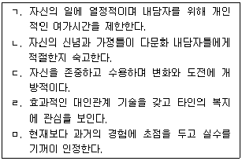
- ㄴ, ㄷ
- ㄱ, ㄴ, ㅁ
- ㄴ, ㄷ, ㄹ
- ㄴ, ㄷ, ㄹ, ㅁ
- ㄱ, ㄴ, ㄷ, ㄹ, ㅁ
(정답률: 62%)
114. 여성주의상담에 관한 설명으로 옳지 않은 것은?
- 남여의 행동 차이는 선천적이기보다 사회화에 의한 것이다.
- 내담자들의 문제는 개인적 특성보다 사회정치적 환경에 의해 더 잘 유발된다.
- 인간 성장과 발달에 대해 연대성과 상호의존성보다 독립성과 자율성을 더 강조한다.
- 상담의 원리는 계층, 인종 등에 확대 적용할 수 있다.
- 내담자의 개인적 변화뿐 아니라 사회의 변화에도 관심을 갖는다.
(정답률: 60%)
115. 상담 첫 회기에서 주로 이루어지는 개입이 아닌 것은?
- “아버지의 말 때문에 많이 실망했나 보구나.”
- “아버지에게 배신감을 느끼는지 궁금하구나.”
- “나도 아버지에 대해 비슷한 경험이 있단다.”
- “아버지의 말에 네가 어떻게 대답했는지 말해보렴.”
- “네가 공부에 흥미를 잃은 건 아버지에 대한 반감이 무의식적으로 작용했기 때문인 것 같구나.”
(정답률: 58%)
116. 다음 대화에 나타나 있는 인간중심 상담자의 개입 반응은?
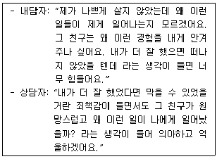
- 자기개방
- 일치된 진솔성
- 감정 자각
- 공감적 반영
- '지금-여기'에서의 경험 표현
(정답률: 70%)
117. 다음 예시에 해당하는 인지치료 기법은?
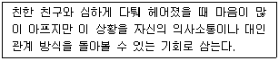
- 개인화(personalization)
- 사고중지(thought stopping)
- 의미축소(minimization)
- 재구성(reframing)
- 증거탐문(questioning the evidence)
(정답률: 60%)
118. 상담의 목표 설정에 관한 설명으로 옳은 것을 모두 고른 것은?
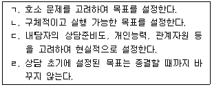
- ㄱ, ㄴ
- ㄴ, ㄷ
- ㄱ, ㄴ, ㄷ
- ㄴ, ㄷ, ㄹ
- ㄱ, ㄴ, ㄷ, ㄹ
(정답률: 70%)
119. 인간중심상담에서 '자기와 경험의 불일치'에 관한 설명으로 옳지 않은 것은?
- 부모가 제시한 가치조건과 자신의 현실적 경험의 불일치는 불안을 유발한다.
- 아동은 부모의 기대와 가치를 내면화하여 현실적인 자기를 형성한다.
- 부모의 조건적 사랑을 받은 아동은 자신의 특성을 선택적으로 수용한다.
- 심리적 부적응은 의미 있는 타인의 조건적인 수용과 존중에 기인한다.
- 왜곡, 부인과 같은 심리적 기제는 자기와 경험의 불일치를 낮추고자 하는 시도이다.
(정답률: 47%)
120. 가필드(S. Garfield)가 제시한 상담의 치료적 공통요인이 아닌 것은?
- 저항의 해석
- 치료적 관계
- 문제의 직면
- 정서적 발산과 정화
- 자기문제에 대한 둔감화
(정답률: 17%)